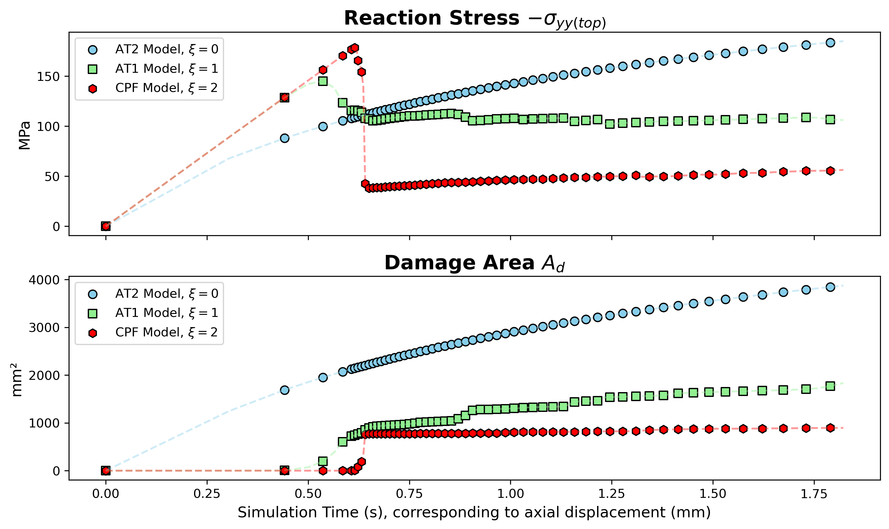

📘 Effect of Crack Geometric Function
🚀 Range of Diffusion
The general form of the crack geometric function is: \[ \alpha(d) = \xi d + (1 - \xi) d^2 \quad \text{with} \; \xi \in [0, 2], \; d \in [0, 1] \] where \( \xi \) is a tuning parameter controlling the linear–quadratic weighting. A normalization coefficient \( c_0 \) is typically defined as: \[ c_0 = 4 \int_0^1 \sqrt{\alpha(\hat{d})} \, d\hat{d} > 0 \]
In this benchmark, no energy decomposition is used — instead, the finite epsilon model is adopted (see Benchmark 1). The setup is based on a biaxial compression test with 5 MPa lateral pressure (see Benchmark 2), and all simulations are run with automatic differentiation (AD) enabled (see Supplement 1).
The energy degradation function used is:
\[
\omega(d) = \frac{(1 - d)^p}{(1 + p_0 d)^q}
\]
with \( p = q = 2 \), \( p_0 = 0 \).
- When \( \xi = 0 \): this is known as the AT2 model.
- When \( \xi = 1 \): the AT1 model.
- When \( \xi = 2 \): It's referred as the Cohesive Phase-Field (CPF) model, though the true CPF model often involves more complex degradation functions parameterized by material data.
🧪 Results Demonstration
Mechanical Behavior

Stress-Strain Curves

✅ Higher \( \xi \) increases macro strength (i.e., higher peak stress).
✅ The finite epsilon model was originally developed for AT1, while the CPF model better captures laboratory behavior, such as the noticeable drop from peak to residual strength.
✅ AT2 exhibits more diffuse damage instead of localized cracks — consistent with theory (bandwidth \( D_u = \infty \)).
❓ How about other \( \xi \) values?
✅ \( \xi = 0, 1, 2 \) are common because the integral \( c_0 \) has closed-form analytical solutions in these cases.
✅ For arbitrary values (e.g., \( \xi = 1.5 \)), \( \sqrt{\alpha(d)} \) becomes nontrivial, requiring numerical integration.
✅ Such values are mathematically valid but require careful explanation and calibration.